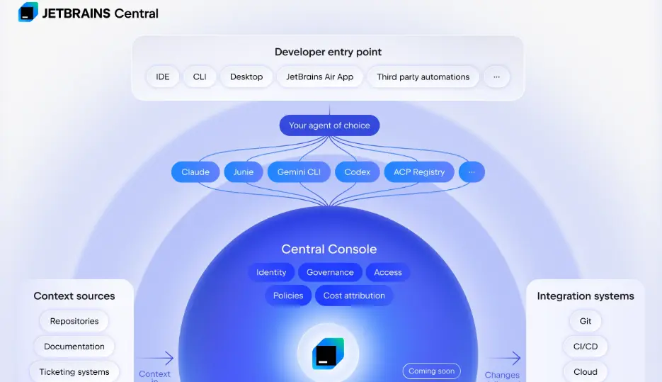
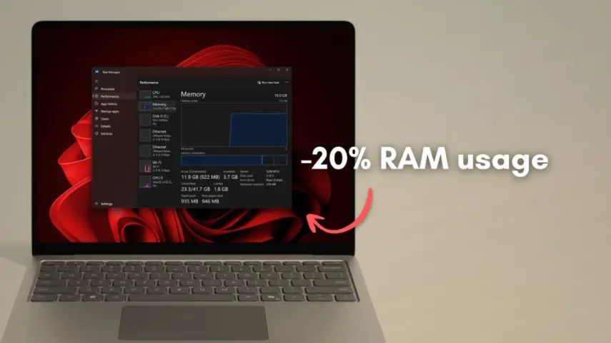
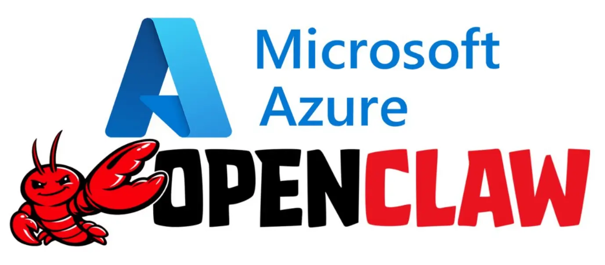
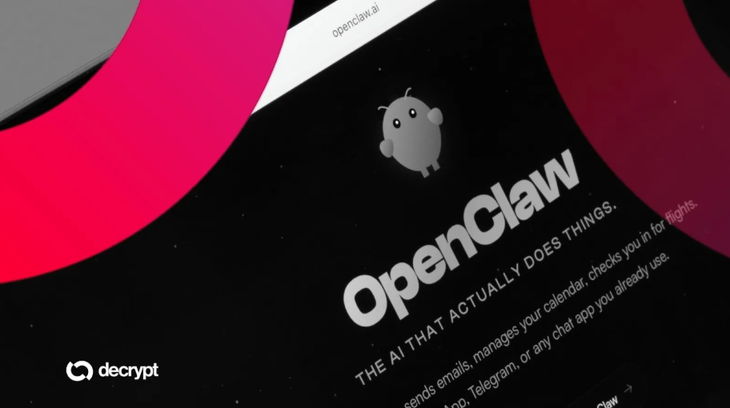
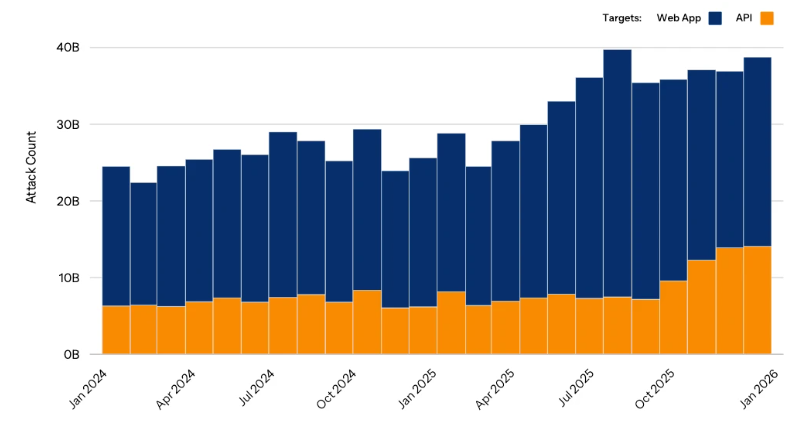
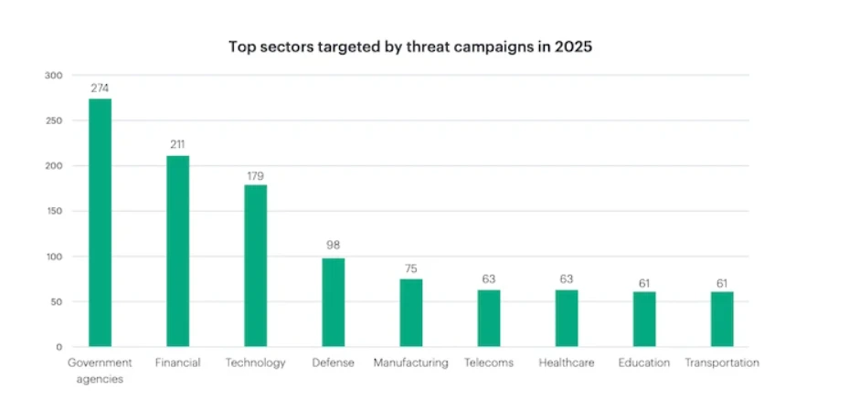

News Archive
All Categories
Cybersecurity Breach
Defence Tech
Cyber Threat
Malware Alert
Security Update
AI Security
28 March 2026
CYBERSECURITY TREND
Cyberattacks now run like businesses.
Mandiant report shows organized, AI-driven attacks accelerating speed, scale, and coordination.
Read More →
TECH FINANCE
AI fears shake cybersecurity stocks hard.
Anthropic’s powerful AI sparked investor panic, causing major cybersecurity stock declines.
Read More →
TECH COMPARISON
CISA sets urgent federal patch deadline.
Windows, macOS, Linux, ChromeOS each excel in different use-cases like gaming, simplicity, or customization.
Read More →
27 March 2026
TECK STARTUP
Teen rejects crores, builds farmer AI.
16-year-old declined ₹2.8 crore offer, runs AI platform helping farmers optimize crops.
Read More →

SOFTWARE AI
JetBrains builds open platform for AI agents.
JetBrains Central enables agentic development, letting multiple AI agents collaborate, automate coding tasks, and...
Read More →
CYBERSECURITY TREND
Old vulnerabilities still fuel modern attacks.
32% exploited flaws are decade-old, while new vulnerabilities are weaponized almost immediately.
Read More →
26 March 2026
CYBERSECURITY POLICY
FCC bans foreign routers over cyber risks.
U.S. blocks new foreign-made routers citing espionage, hacking, and supply-chain security threats.
Read More →
CYBERSECURITY TECHNOLOGY
Google accelerates quantum-safe encryption timeline.
Company targets 2029 migration as quantum advances threaten current encryption sooner than expected.
Read More →
ROBOTICS INNOVATION
Scientists create human-robot “centaur” hybrids.
Wearable robotic system adds extra legs, boosting strength, mobility, and endurance for extreme tasks.
Read More →
25 March 2026
LINUX RELEASE
Kali Linux 2026.1 launches with upgrades.
New release adds tools, BackTrack mode, and refreshed default theme.
Read More →
FINTECK SECURITY
RBI deploys AI shield against fraud.
New norms use AI to detect and prevent digital payment fraud across India.
Read More →

SOFTWARE OPTIMIZATION
Microsoft reduces Windows 11 resource usage.
Company revisits efforts to cut RAM and install size by 20%.
Read More →
24 March 2026
TECH STRATEGY
Nvidia opens racks to rival chips.
New server racks support competitor processors, expanding Nvidia’s role in cloud infrastructure.
Read More →

CYBERSECURITY CLOUD
Microsoft secures OpenClaw on Azure VMs.
Guide shows deploying AI agents on Azure Linux VMs with NSG hardening and Bastion access.
Read More →
AI automation
Claude AI now operates computers autonomously.
Anthropic enables Claude to control apps, mouse, keyboard, completing tasks without user presence.
Read More →
23 march 2026
CYBERSECURITY MALWARE
VoidStealer bypasses Chrome encryption defenses.
Malware uses debugger breakpoints to extract Chrome master key from memory stealthily.
Read More →
AI INDUSTRY
AI tokens become new productivity metric.
Jensen Huang says engineers may be judged by AI token usage instead of code output.
Read More →
CYBERSECURITY POLICY
China issues OpenClaw security guidelines.
Authorities advise isolation, limited privileges, and no sensitive data use to reduce AI risks.
Read More →
22 March 2026
ENVIRONMENT INNOVATION
Teen builds robot to clean oceans.
Boyan Slat develops system removing plastic waste from oceans at scale.
Read More →
CYBERSECURITY AWARENESS
Telangana launches cyber safety initiative.
Program boosts public awareness and protection against rising online threats.
Read More →
CYBERSECURITY BREACH
Navia breach impacts 2.7 million users.
Data leak exposed personal information of millions in recent cyberattack.
Read More →
21 March 2026
AI DEVELOPMENT
Script runs Claude locally without cloud.
Developer enables local LLM execution, reducing dependency on external cloud services.
Read More →
CYBERSECURITY ADVISORY
CISA warns on Intune security risks.
Advisory follows Stryker breach exposing weaknesses in Microsoft Intune deployments.
Read More →
BLOCKCHAIN INNOVATION
Quantum-ready Bitcoin prototype unveiled.
Attacker used AI tools to compromise FortiGate devices within five weeks.
Read More →
20 March 2026
CYBERCRIME RANSOMWARE
Ransomware breach exposed 672,000 people.
Attack on Marquis stole sensitive data and disrupted dozens of US banks.
Read More →
CYBERWARFARE ATTACK
APT28 exploits Zimbra in Ukraine.
Russian military hackers used flaw to target Ukrainian government systems.
Read More →
GEOPOLITICS ECONOMICS
Middle East conflict impacts global IT spending.
IDC warns geopolitical tensions will slow enterprise technology investments worldwide.
Read More →
19 March 2026
CYBERSECURITY RANSOMWARE
Cisco firewall zero-day exploited by ransomware.
Interlock group abused vulnerability to breach networks and deploy ransomware payloads.
Read More →

CYBERCRIME PHISHING
OpenClaw developers targeted in phishing.
Attackers used GitHub phishing to steal credentials from project contributors.
Read More →

CYBERSECURITY TREND
API attacks surge across industries globally.
Akamai report shows sharp rise in API abuse targeting multiple sectors.
Read More →
18 March 2026

CYBERCRIME TREND
Government cyberattacks surge globally in 2026.
Report shows sharp rise in targeted campaigns against government agencies worldwide.
Read More →
CYBERSECURITY VULNERABILITY
Ubuntu flaw enables privilege escalation.
CVE-2026-3888 lets attackers gain elevated access on vulnerable systems.
Read More →
CYBERSECURITY THREAT
Zombie ZIP bypasses antivirus detection.
New archive technique evades scanners, enabling hidden malware delivery.
Read More →
17 March 2026
CYBERCRIME TREND
India second most targeted by scams.
Meta report ranks India among top nations facing rising global cyber scam activity.
Read More →
CYBERSECURITY THREAT
Malicious Chrome extension disabled by Google.
Popular extension removed after malware found stealing user data.
Read More →
GEOPOLITICS CYBER
China warns US over cyber accusations.
Beijing rejects hacking claims, urges cooperation instead of confrontation.
Read More →
16 March 2026
CYBERCRIME MALWARE
Malware discovered inside Steam games.
FBI probes malicious software hidden in Steam-hosted games targeting unsuspecting players.
Read More →
CYBERSECURITY PATCH
Microsoft fixes RRAS remote code flaw.
Windows 11 OOB hotpatch addresses critical RRAS vulnerability enabling remote code execution.
Read More →
AI INDUSTRY
Red Hat partners with Nvidia for AI.
Collaboration focuses on open-source infrastructure powering large-scale AI factories.
Read More →
15 March 2026
CYBERCRIME PREVENTION
India stops ₹8,600-crore cyber fraud.
MHA reports large-scale prevention using cybercrime monitoring and financial blocking
Read More →
QUANTUM RESEARCH
Quantum teleportation advances future internet.
Researchers achieve reliable quantum state transfer, enabling progress toward quantum communication networks.
Read More →
CYBER THREAT
Invisible Unicode hides malicious code.
Attackers used hidden Unicode characters in GitHub and VS Code packages.
Read More →